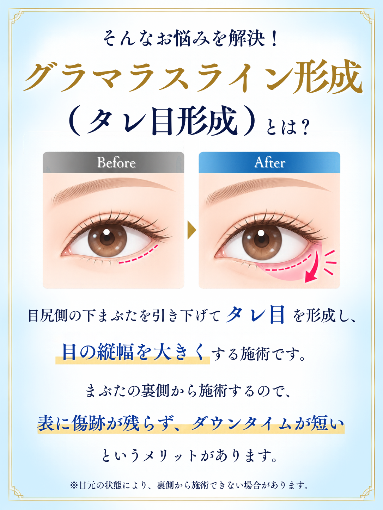
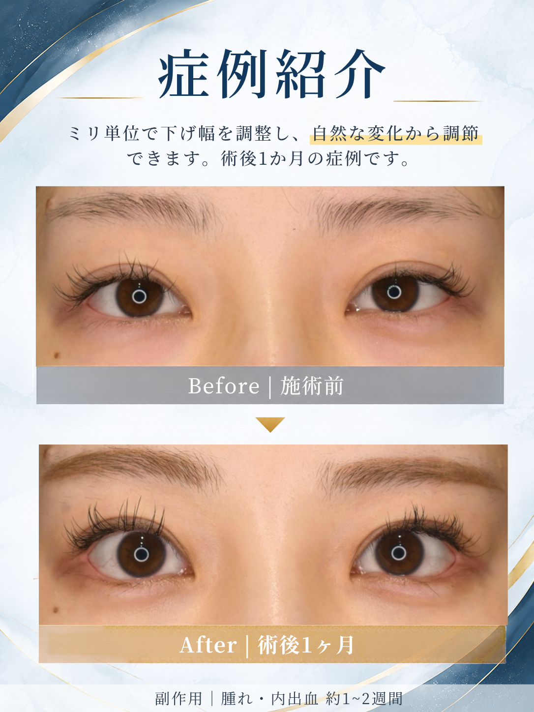
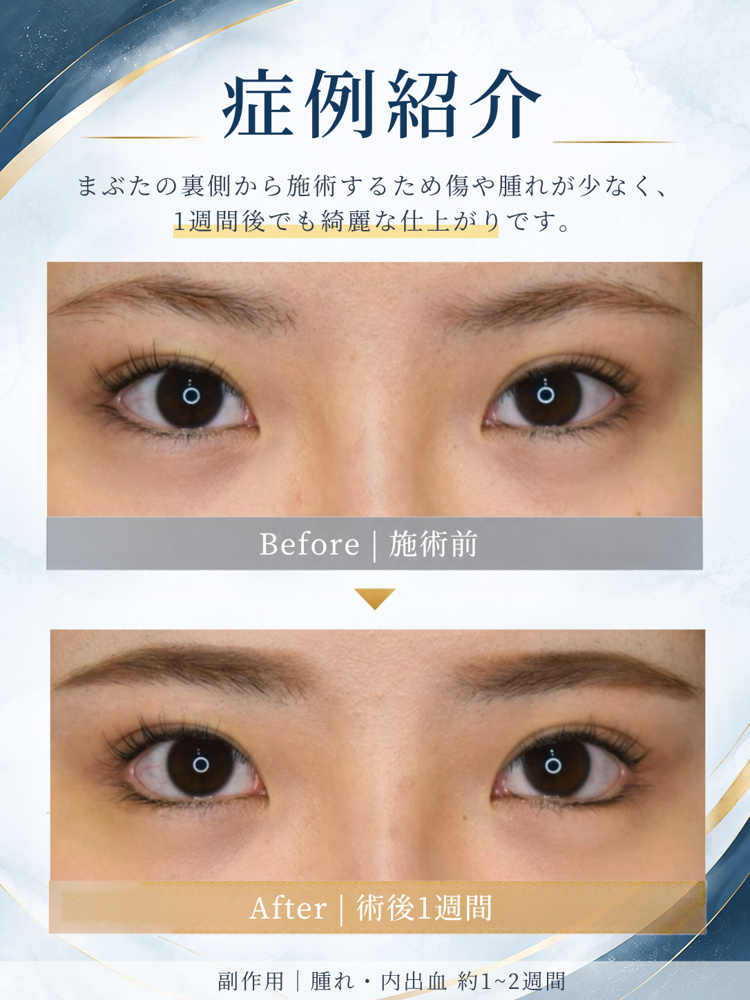
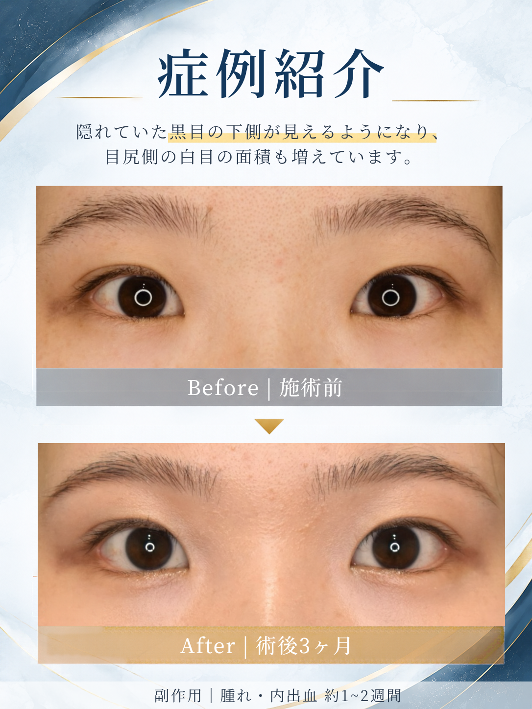
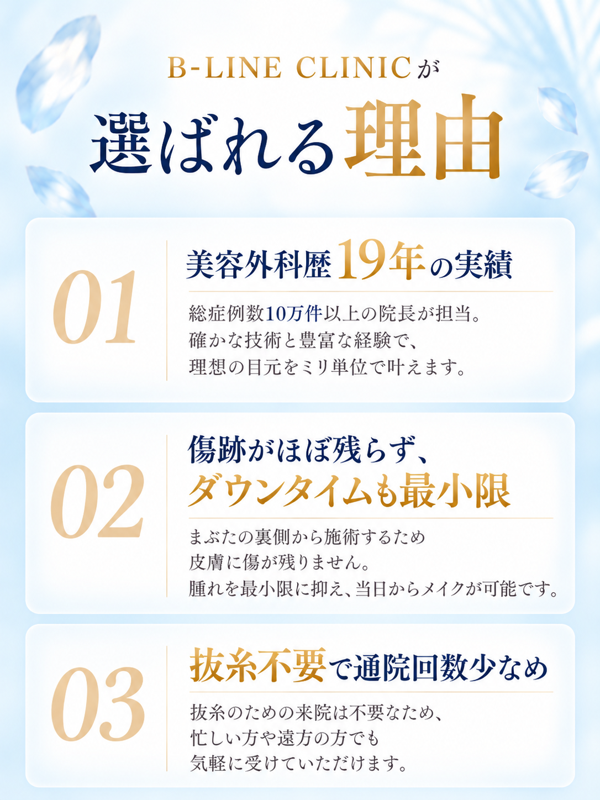
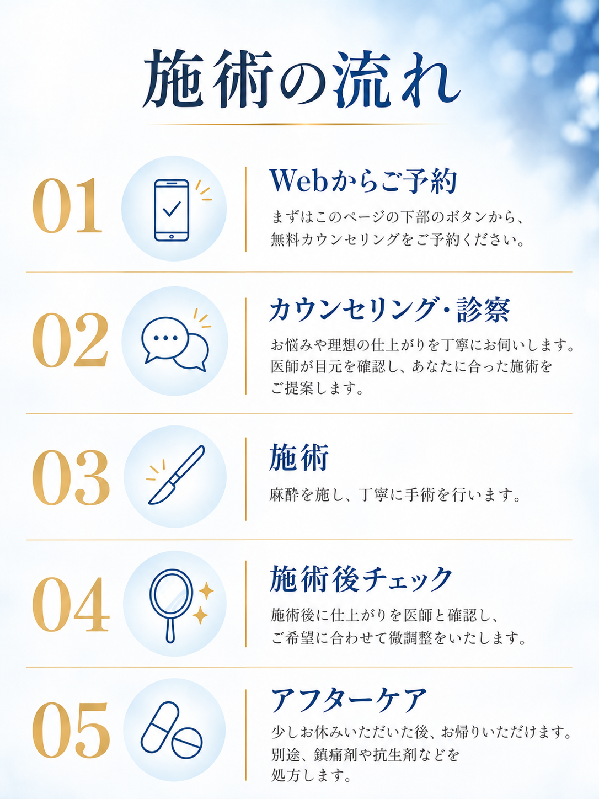
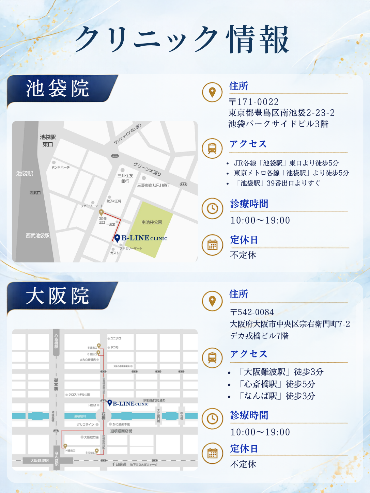
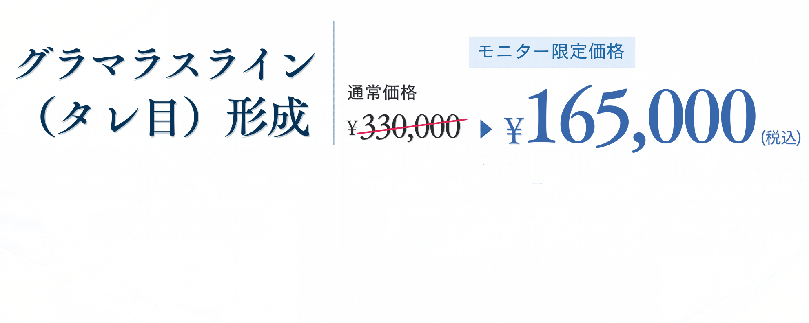

B-LINE CLINIC
グラマラスラインのご相談・ご予約
必要事項をご入力のうえ、「送信する」を押してください。
メールが届かない場合は迷惑メールBOXもご確認ください。
※￥165,000（税込）で施術できるのは、症例モニター様に限ります。
枠内を上下にスクロールして全文をご確認ください。
B-LINE CLINICグループ（以下，「当クリニック」といいます。）が管理運営するウェブサイト（以下，「（当サイト）といいます。）はお客様へよりよい医療サービスを提供することを目的として運営されています。 当サイトでお客様からご提供いただきました個人情報の取扱いについて，以下のとおりプライバシーポリシー（以下，「本ポリシー」といいます。）を定めます。
「個人情報」とは、当サイトではカウンセリング予約・メール相談をされる際に必要となる、名前、年齢、メールアドレス、電話番号等を指します。
ご提供いただいた個人情報の取扱いについて、厳重に管理し、安全に取扱うよう最大限の注意を払います。 お客様へより良い医療サービスを提供するために、他の医療機関と連携したり、個人情報の取扱いを外部に委託することがあります。 この場合、業務委託先に対し、情報等遺漏のないよう、管理体制に充分注意を払うべく指示・監督を行います。
当クリニックでは、次に掲げる場合を除いて，ご提供いただいた個人情報を開示することはありません。ただし，個人情報保護法その他の法令で認められる場合を除きます。
お客様は，当クリニックの保有する自己の個人情報が誤った情報である場合には，当クリニックが定める手続きにより，当クリニックに対して個人情報の訂正，追加または削除（以下，「訂正等」といいます。）を請求することができます。 また、当クリニックは，お客様から前項の請求を受けてその請求に応じる必要があると判断した場合には，当該個人情報の訂正等を行うものとします。 当クリニックは，本人から，個人情報が，利用目的の範囲を超えて取り扱われているという理由，または不正の手段により取得されたものであるという理由により，その利用の停止または消去（以下，「利用停止等」といいます。）を求められた場合には，遅滞なく必要な調査を行います。調査結果に基づき，その請求に応じる必要があると判断した場合には，遅滞なく，当該個人情報の利用停止等を行います。
当クリニックでは当サイトをどのように利用しているかデータを収集、利便性向上のために、Google社の提供するサービスである、Google Analytics※を使用しています。Google Analyticsは独自のサードパーティによる「Cookie」を使用しております。このトラフィックデータはwebサイトへのアクセスに関する情報であり、利用者のプライバシー情報（お名前、メールアドレス、電話番号、住所）は含まれません。 Cookieは行動ターゲティング用、トラフィック調査用などで、広告管理システムなど、サービス向上の一環で使用するものであり、それ以外の目的で利用することはありません。 ※Google Analytics Cookieの詳細については下記をご参照ください。 https://developers.google.com/analytics/devguides/collection/analyticsjs/cookie-usage?hl=ja 当サイトご利用者様がブラウザの設定を変更することで、Cookieの機能を無効にすることが可能ですが、当サイトの一部がご利用できなくなる場合がございます。ご利用の詳細については各ブラウザー提供会社にご確認ください。
当クリニックの個人情報の取り扱いに関するお問い合せは下記までご連絡ください。 → お問い合わせ
当サイトをご利用の際は当クリニックの個人情報保護方針に同意する必要があります。同意いただけない場合は本サイトをご利用いただけません。 当クリニックは、「本ポリシーの内容を予告なく改訂する場合がございます。改訂後のプライバシーポリシーは，本サイトに掲載したときから効力を生じるものとします。重要な改訂の場合、当サイト上にて皆様にお知らせいたします。
18歳未満の方の治療には、親権者の同意が必要です。
1/11
